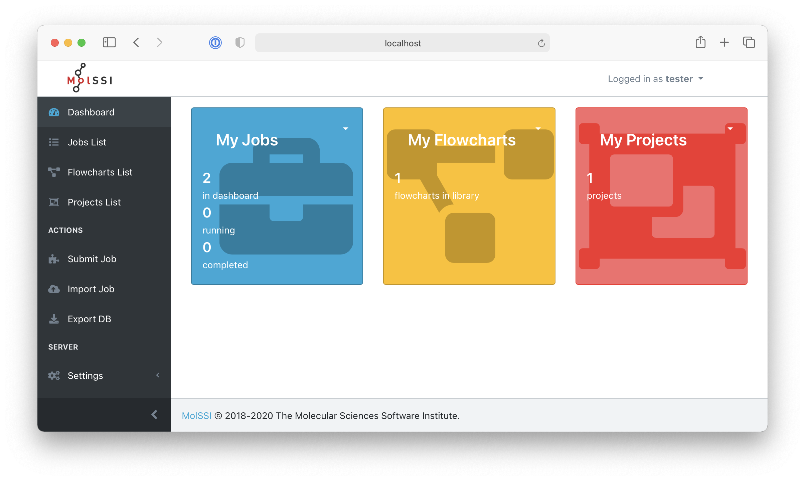
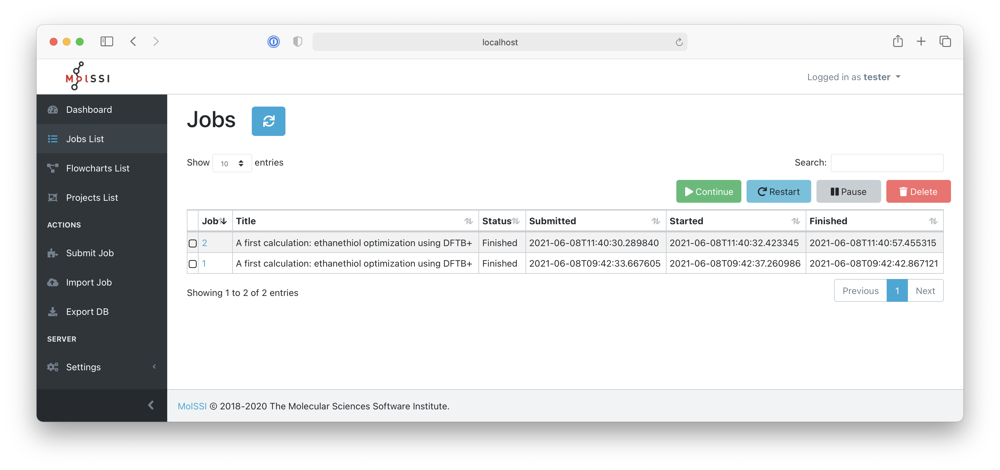
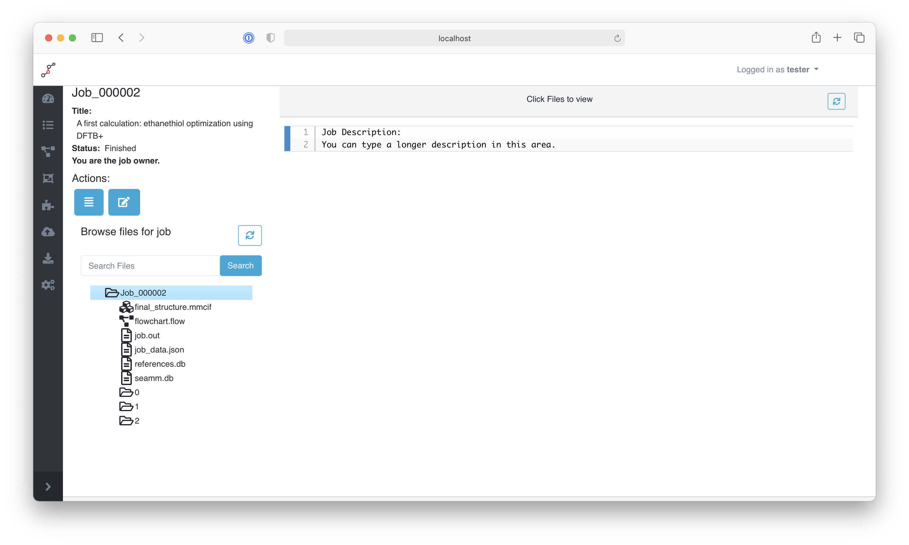
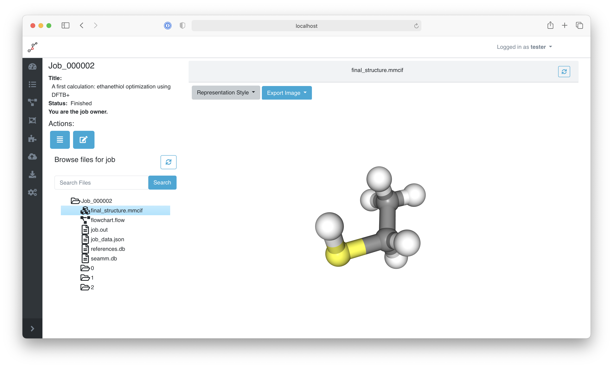
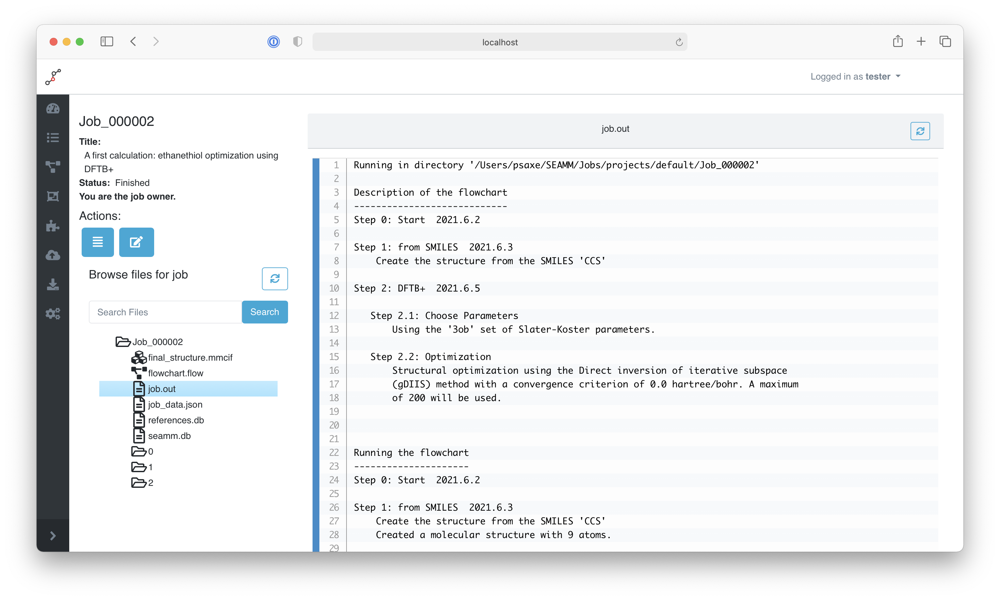
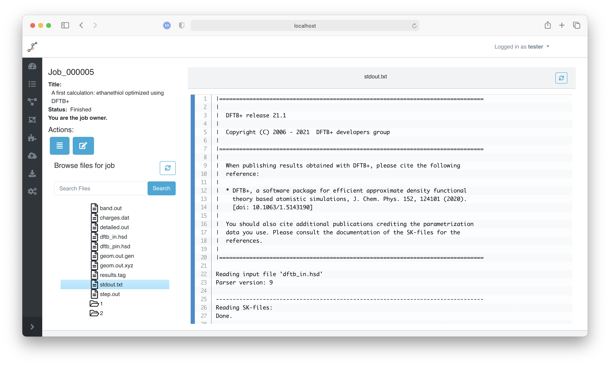

Tutorial 2: The Dashboard¶
Before getting to this tutorial, you need to have finished Tutorial 1: Getting Started so that there is at least one job to look at.
You access the Dashboard in your web browser, by default at http://localhost:5000 (you might want to open the link in a new tab or window!):
The Dashboard when you first access it.¶
The left pane is a menu of sections in the Dashboard. The left arrow at the bottom right of the pane collapses the menu to icons, freeing up more space for the right pane, which may be useful when looking at e.g. outputs from the simulation codes. The right pane of this initial view shows a summary of the jobs, flowcharts and projects visible to the current user. When you first access the Dashboard webpage, it shows everything available to anyone without logging in.
Now let’s log in and see what happens. Click the Public User menu at the upper right and select Login. Use you username and password. The initial password is default. Once you are logged in the front page of the Dashboard should change slightly:

The Dashboard after logging in.¶
Notice that now there are a couple jobs, one flowchart, and one project. You can use either the menu at the top of each panel or the items in the menu in the left pane to see the job, flowcharts, and projects that you have access to. Feel free to look around, but eventually click on Jobs List in the menus to the left:

The list of jobs in the Dashboard.¶
If you are just starting, you hopefully have just one job in the list. I ran it twice while testing so have two copies. Notice the title that you gave to the job is listed. It is important to use good but short titles! There isn’t much space, so try to keep your titles down to 50-80 characters.
If you click on the number of the job, it will open the results from the job:

The main page of a job.¶
The title appears again at the top of the left pane of the window, followed by information about the job. Below this is a listing of the files from the job. The job’s description is at the top of the right pane, below which is a large empty space that will be used to display the files from the job when you click on them in the directory to the left. Note that I collapsed the main menus at the very left to gain space.
Now click on the final_structure.mmcif file in the driectory section:

Displaying the final structure.¶
You can rotate the molecule using your mouse, change the representation using the menu at the top of the page, and export the current view as a picture.
Move on to job.out, clicking on it:

The main output of the job.¶
This is the main output for the job, which gives a summary of the job, the results, and a list of citations at the end. Let’s spend some time understanding the information being presented.
The first section is always a summary of the job:
Description of the flowchart
----------------------------
Step 0: Start 2021.6.2
Step 1: from SMILES 2021.6.3
Create the structure from the SMILES 'CCS'
Step 2: DFTB+ 2021.6.5
Step 2.1: Choose Parameters
Using the '3ob' set of Slater-Koster parameters.
Step 2.2: Optimization
Structural optimization using the Direct inversion of iterative subspace
(gDIIS) method with a convergence criterion of 0.0 hartree/bohr. A maximum
of 200 will be used.
This summary is printed before the job starts actually running so even if the job takes a long time you can review what it is going to do. If you see a mistake you can kill the job and fix the problem. The summary tries to proved the key parameters for the calculations, giving enough information that someone else could replicate the calculation given just the summary. Also note that the version of each plug-in is given, in case there is a bug in particular version.
The second section is a summary of the results from running the flowcharts:
Running the flowchart
---------------------
Step 0: Start 2021.6.8
Step 1: from SMILES 2021.6.3
Create the structure from the SMILES 'CCS'
Created a molecular structure with 9 atoms.
Step 2.1: Choose Parameters
Using the '3ob' set of Slater-Koster parameters.
Step 2.2: Optimization
Structural optimization using the Direct inversion of iterative subspace
(gDIIS) method with a convergence criterion of 0.0001 E_h/a_0. A maximum of
200 will be used.
Step 2.1: Choose Parameters
Using the '3ob' set of Slater-Koster parameters.
Step 2.2: Optimization
Structural optimization using the Direct inversion of iterative subspace
(gDIIS) method with a convergence criterion of 0.0001 E_h/a_0. A maximum of
200 will be used.
The geometry optimization converged in 25 steps to a total energy of
-8.115704 Ha.
Wrote the final structure to 'final_structure.mmcif' for viewing.
In this case the results are similar to the initial summary. Note, however, that the FromSMILES step reports how many atoms are in the created structure and the DFTB+ Optimization reports the total energy and number of steps taken. Other types of calculations and other plug-ins might have more results to report.
The last section of the main job output provides references that should be cited for the calculations done:
Primary references:
(1) Jessica Nash, Eliseo Marin-Rimoldi, Paul Saxe. SEAMM: Simulation Environment
for Atomistic and Molecular Modeling, version 2021.6.8; The Molecular
Sciences Software Institute (MolSSI): Virginia Tech, Blacksburg, VA, USA,
https://github.com/molssi-seamm/seamm
(2) Hourahine, B.; Aradi, B.; Blum, V.; Bonafé, F.; Buccheri, A.; Camacho, C.;
Cevallos, C.; Deshaye, M. Y.; Dumitrică, T.; Dominguez, A.; Ehlert, S.;
Elstner, M.; van der Heide, T.; Hermann, J.; Irle, S.; Kranz, J. J.; Köhler,
C.; Kowalczyk, T.; Kubař, T.; Lee, I. S.; Lutsker, V.; Maurer, R. J.; Min,
S. K.; Mitchell, I.; Negre, C.; Niehaus, T. A.; Niklasson, A. M. N.; Page,
A. J.; Pecchia, A.; Penazzi, G.; Persson, M. P.; Řezáč, J.; Sánchez, C. G.;
Sternberg, M.; Stöhr, M.; Stuckenberg, F.; Tkatchenko, A.; Yu, V. W.-z.;
Frauenheim, T. DFTB+, a software package for efficient approximate density
functional theory based atomistic simulations. The Journal of Chemical
Physics 2020, 152, 124101. DOI: 10.1063/1.5143190
(3) Gaus, Michael; Lu, Xiya; Elstner, Marcus; Cui, Qiang. Parameterization of
DFTB3/3OB for Sulfur and Phosphorus for Chemical and Biological
Applications. Journal of Chemical Theory and Computation 2014, 10,
1518-1537. DOI: 10.1021/ct401002w
(4) Gaus, Michael; Goez, Albrecht; Elstner, Marcus. Parametrization and
Benchmark of DFTB3 for Organic Molecules. Journal of Chemical Theory and
Computation 2013, 9, 338-354. DOI: 10.1021/ct300849w
Secondary references:
(1) Paul Saxe. DFTB+ plug-in for SEAMM, version 2021.6.5; The Molecular Sciences
Software Institute (MolSSI): Virginia Tech, Blacksburg, VA, USA,
https://github.com/molssi-seamm/dftbplus_step
Process time: 0:00:01.408026 (1.408 s)
Elapsed time: 0:00:02.932646 (2.933 s)
The references are sometimes divided by a sense of how important they are. For more complicated flowcharts the number of references can be very large, so SEAMM tries to help you decide which are the most important references.
The references are also stored in a small database file, references.db. Future versions of SEAMM will provide tools to merge the references from all of the jobs you used in a particular project. This will help you properly cite the tools that you used.
If you now click on the folder labeled 2, which corresponds to the second step of the flowchart, which was the DFTB+ geometry optimization:

The files for the DFTB+ step.¶
The main output for DFTB+ is stdout.txt which has been selected in the picture above, and is displayed in the right pane. The left panel is the directory of the files in this step, which are the input and output from DFTB+. You can use these to see in detail the input generated by the plug-in, as well as the outputs.
If you look at dftb_in.hsd you will see the raw input for DFTB+. It was certainly easier to use the GUI than hand-edit the input file directly.
This concludes the second tutorial, covering using the Dashboard and examining the output from you calculations. The Dashboard will display files in different ways depending on their content. Text files are display as text; molecules as 3-D structures; tabular data as sortable tables; and graphs as graphs.